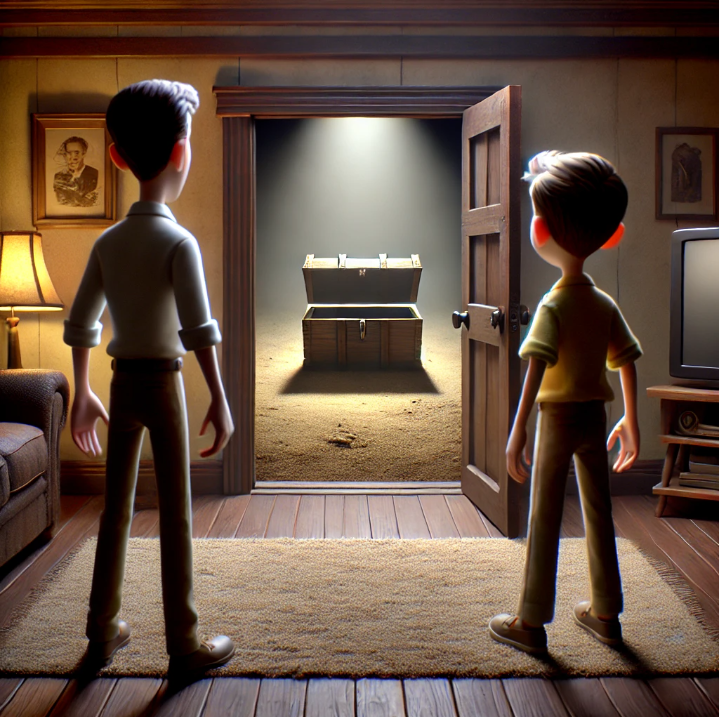

Mystery i Lägenhet 13: Säsong 1, Avsnitt 3

Kapitel 3: En Märklig Upptäckt
Senare den dagen, medan de utforskadeexplored / استكشاف / بررسی کردند lägenheten, hittadefound / وجدوا / پیدا کردند de en dold dörrdoor / باب / در i hörnet av vardagsrummet. Den var litensmall / صغير / کوچک , nästan omöjlig att upptäckadiscover / اكتشاف / کشف کردن .
"Ska vi öppnaopen / فتح / باز کردن den?" frågadeasked / سأل / پرسید Elias.
" SjälvklartOf course / بالطبع / البته !" svaradeanswered / أجاب / پاسخ داد Johan, nyfikenheten tog överhand.
Bakom dörrenthe door / الباب / در fann de ett litetsmall / صغير / کوچک , dammigtdusty / مغبر / گردآلود och mörkt rum. Mitt i rummet stod en gammal kistachest / صندوق / صندوقچه .
Johan öppnade den försiktigt och avslöjade en hög med gamla brevletters / رسائل / نامهها , fotografierphotographs / صور / عکسها och några småsaker från vad som verkade vara 1960-talet.
"Vad är det här?" sadesaid / قال / گفت Elias och plockadepicked up / التقط / برداشت upp ett av breventhe letters / الرسائل / نامهها .
När de lästeread / قرأ / خواندند breven upptäckte de en historia om en familj som en gång bott i lägenheten. De hade flyttatmoved / انتقلوا / نقل مکان کردند in med glädje, men snart börjat uppleva konstiga händelser—saker som rörde sig av sig själva, konstiga ljud på natten, och föremål som försvanndisappeared / اختفى / ناپدید شدند .
Det sista brevetletter / الرسالة / نامه antydde att familjen lämnat hastigt, men förklarade inte varför.
utforskade
explored / بررسی کردند / استكشاف
hittade
found / پیدا کردند / وجدوا
dörr
door / در / باب
liten
small / کوچک / صغير
upptäcka
discover / کشف کردن / اكتشاف
öppna
open / باز کردن / فتح
frågade
asked / پرسید / سأل
självklart
of course / البته / بالطبع
Johan
Proper Name
dörren
the door / در / الباب
litet
small / کوچک / صغير
dammigt
dusty / پر از گرد و غبار / مغبر
kista
chest / صندوق / تابوت
brev
letter / نامه / رسالة
fotografier
photographs / عکسها / صور
sade
said / گفت / قال
plockade
picked / برداشت / التقط
breven
the letters / نامهها / الرسائل
läste
read / خواند / قرأ
upptäckte
discovered / کشف کرد / اكتشف
historia
story / داستان / قصة
flyttat
moved / جابهجا شدند / انتقلوا
uppleva
experience / تجربه کردن / عايشوا
försvann
disappeared / ناپدید شدند / اختفى
brevet
the letter / نامه / الرسالة